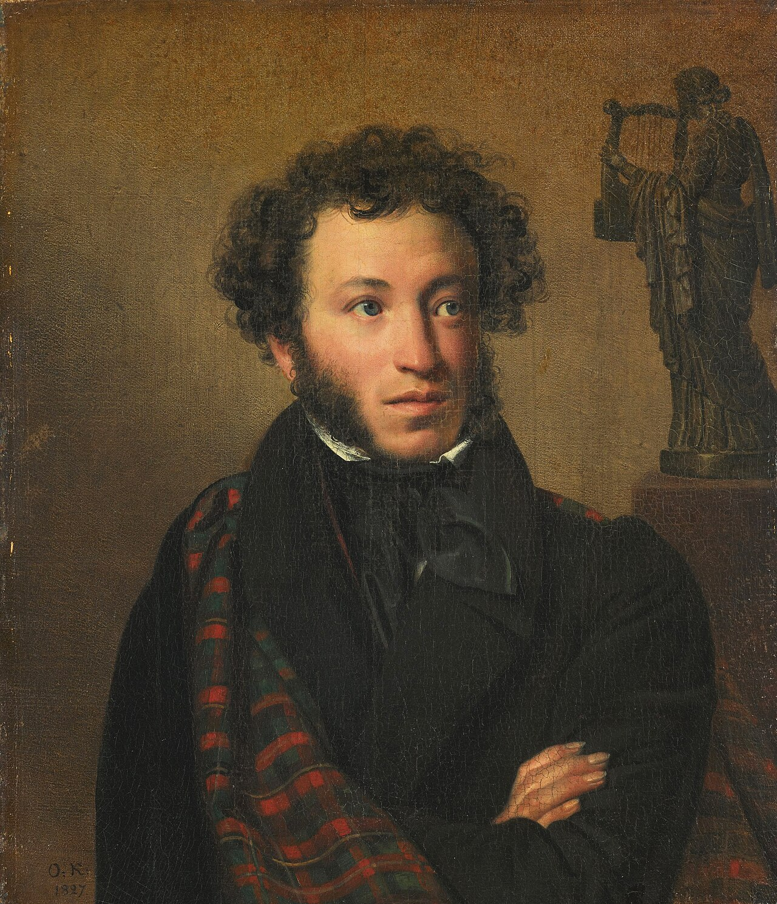

Привет! Я Александр Пушкин. Я начал писать свои первые произведения уже в семь лет. В годы учебы в Лицее я прославился, когда прочитал свое стихотворение Гавриилу Державину. Мне повезло первым из русских писателей начать зарабатывать литературным трудом. Я создавал не только лирические стихи, но и сказки, историческую прозу и произведения в поддержку революционеров — за вольнодумство меня даже отправляли в ссылки.

Все материалы, размещенные на этом сайте, предоставляются на условиях лицензии Creative Commons Zero (CC0), если не указано иное. подробнее.